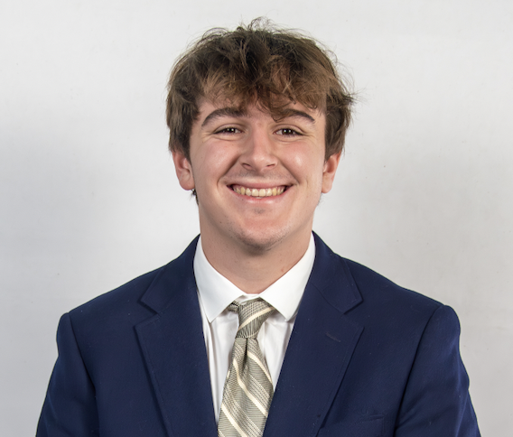

I am a sports broadcaster and assistant sports director at the University of Oregon's student radio station, KWVA. I am searching for a play-by-play broadcasting internship during the summer.
University of Oregon, Eugene, OR
Bachelor of Science in Journalism with a Minor in Sports Business. Expected June 2028
GPA: 3.8
Relevant Coursework:
Urban School of San Francisco, San Francisco, CA
High School Diploma, June 2024
WGPA: 4.1